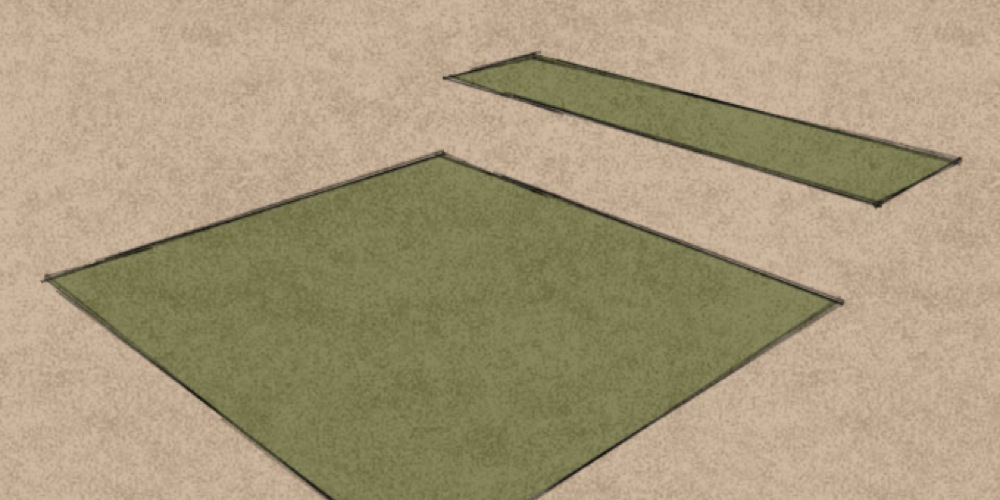
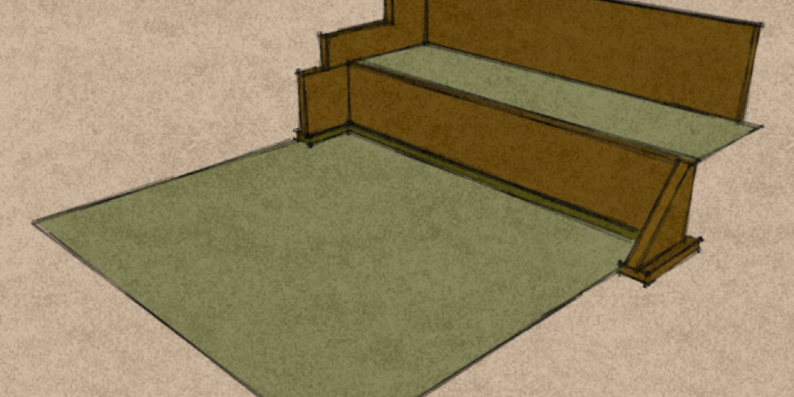
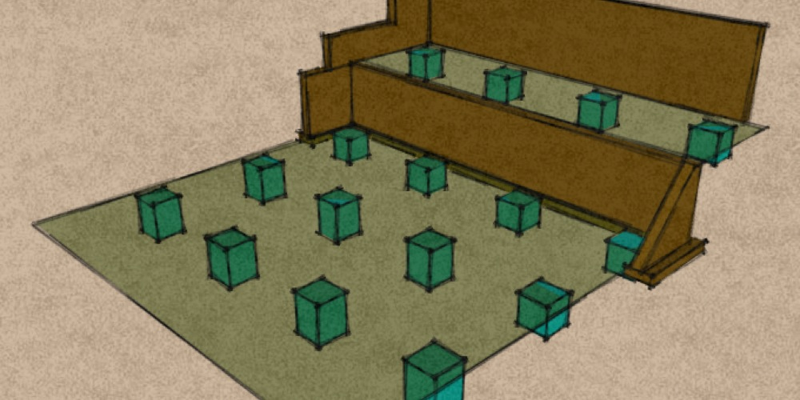
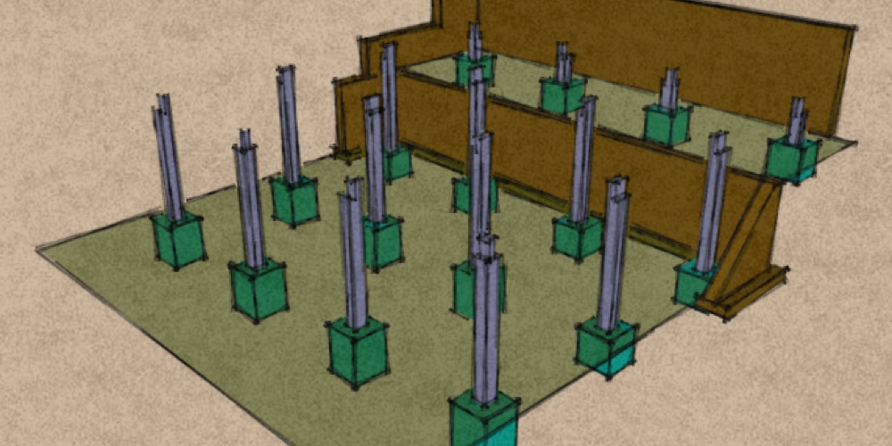
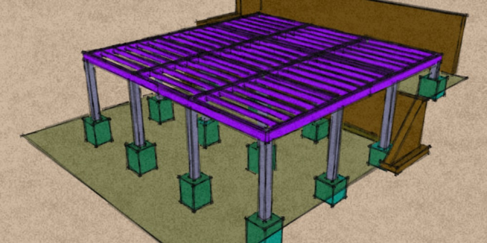

Marsden Studio
In early 2009 I began designing a new structure to replace the old pottery shed in my garden.
We wanted it to be big enough to accommodate a pottery, a general garden workshop, and a large spacious studio with plenty of natural light.
The site was on a steep slope, the original wall retaining the bank wouldn't allow for our slightly enlarged footprint. We realised we would have to demolish it and dig into the bank a couple of meters in order to allow enough space for a new retaining wall built with 9 inch hollow concrete blocks re enforced with rebar and poured concrete. We also needed to create a new level above the old one in a similar manner.
We decided to first build the lower structure out of 8 inch square green oak timber, to create a platform accommodating the main structural elements of the building. Then in our own time we could erect a lighter structure on this platform out of 2 by 4 inch pine using simple framing techniques.
After some research we settled on the unlikely idea of resting the weight of the whole building on threaded steel rod. They would be glued into holes in the concrete pads. Then more holes would be drilled in the bottom of the posts and lifted into position .Two nuts and a washer would allow us to make fine adjustments to the height, and level them to each other.
